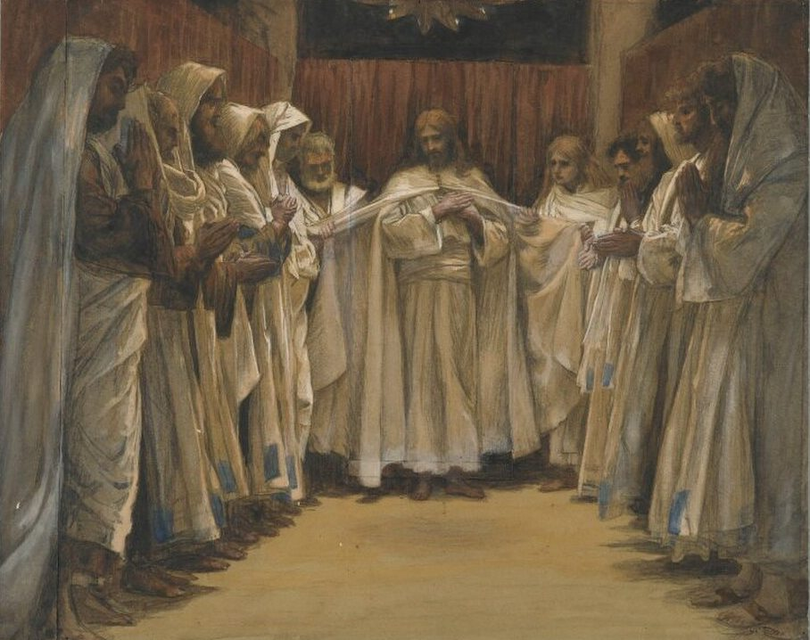

John 14
Let not your heart be troubled
The night before the cross, Jesus steadies frightened men: a place in his Father's house, the only way there, and a Comforter who will live inside them.
Things to watch for
Keep these questions in the back of your mind as we read. We'll come back to every one of them at the end.
- A troubled heartWhat does Jesus give a troubled heart?
- His promiseWhat is Jesus doing for us now, and what will he do?
- The only wayHow does a man get to the Father?
- Seeing GodWhat did Jesus mean by “he that hath seen me hath seen the Father”?
- LoveHow do we show that we love Jesus?
- The ComforterWho is the Comforter, and where does he live?
Part one
A place for you
Verses 1–6
Jesus has just told them he's leaving. Now he tells them where, and why.
Why their hearts were troubled
There are no chapter breaks in the room. Jesus is still talking at the same table, and the men have just heard three hard things:
A traitor at the table
“one of you shall betray me.”
He's leaving
“Whither I go, ye cannot come.”
Peter will deny him
“till thou hast denied me thrice.”
Let not your heart be troubled.
“Troubled” is the word for water being stirred up (John 5:7). Jesus knew the feeling: “Now is my soul troubled” (John 12:27). And his cure is not “calm down.” It's “ye believe in God, believe also in me.” He puts himself right beside God as the One to lean on.
Many mansions
Not a mansion the way we use the word. It's a room of your own, a place to live and stay. And “if it were not so, I would have told you.” A lot of us have been lied to by everybody. He never has.
- “I go”
to the cross, the grave, and back to the Father.
- “to prepare a place for you”
That's what he's doing right now.
- “I will come again”
He's coming back in person.
- “that where I am, there ye may be also”
The best part of heaven is him.
“For the Lord himself shall descend from heaven with a shout, with the voice of the archangel, and with the trump of God: and the dead in Christ shall rise first: Then we which are alive and remain shall be caught up together with them in the clouds, to meet the Lord in the air: and so shall we ever be with the Lord.”
1 Thessalonians 4:16–17
Not a map. A Man.
Thomas asks the honest question: “how can we know the way?” Jesus doesn't hand him directions. He says, “I am the way.”
“There is a way which seemeth right unto a man, but the end thereof are the ways of death.”
Proverbs 14:12
Plenty of us tried every road on the map. They all dead-ended. There's one road to the Father, and it's a Person. That road is narrow, but the gate is open to whosoever will come.
The sixth “I am”
- The bread of lifeJohn 6:35
- The light of the worldJohn 8:12
- The doorJohn 10:9
- The good shepherdJohn 10:11
- The resurrection and the lifeJohn 11:25
- The way, the truth, and the lifeJohn 14:6
- The true vineJohn 15:1
The way, for the man who is lost. The truth, for the man who's been lied to, by other people and by his own addiction. The life, for the man who feels dead inside.
“Neither is there salvation in any other: for there is none other name under heaven given among men, whereby we must be saved.”
Acts 4:12
Part two
Shew us the Father
Verses 7–14
Philip wants to see God. He's been looking at him for three years.

Want to see God? Look at Jesus.
“No man hath seen God at any time; the only begotten Son, which is in the bosom of the Father, he hath declared him.”
John 1:18
Philip has walked with Jesus for about three years and still missed it. How Jesus treated the leper, the woman at the well, the thief, Peter after the fall: that is what the Father is like.
Some of us had fathers who made God look harsh, or just absent. Jesus says: look at Me. That's your Father in heaven.
Greater works?
Nobody has outdone raising Lazarus. “Greater” here means greater in reach. Jesus stayed in one small land for about three years. After he went to the Father and sent the Spirit, look what happened:
After his ministry
believers gathered in Jerusalem (Acts 1:15)
One day at Pentecost
saved and baptized (Acts 2:41)
From there the gospel went to the whole world, and it's still going, through ordinary believers. Every man in this room who tells another man what Jesus did for him is part of those “greater works.”
What “in my name” means
- A magic phrasetacked on the end of a prayer
- A blank checkfor whatever I happen to want
- Asking as his manfor what he wants, on his authority, so the Father is glorified
“And this is the confidence that we have in him, that, if we ask any thing according to his will, he heareth us:”
1 John 5:14
To ask in someone's name is to ask the way an ambassador does: for his king's business. Ask for strength today, for a brother's freedom, for a family put back together. Those are his kinds of requests, and he loves to answer them.
Part three
Another Comforter
Verses 15–31
Jesus is leaving, but he won't leave them alone.
One called alongside
A helper, a counsellor, someone who stands up for you. And “another” means another of the same kind. Jesus is saying: Someone exactly like Me is coming to take My place beside you.
He is “the Spirit of truth” (v. 17), a Person, not a force. He is the Holy Ghost, God himself.
With you, then in you
Up to then, the Spirit was with them. Jesus promises a change: he “shall be in you.”
Since Jesus rose and went to the Father, the Holy Spirit moves in to stay the moment a man believes:
“In whom ye also trusted, after that ye heard the word of truth, the gospel of your salvation: in whom also after that ye believed, ye were sealed with that holy Spirit of promise,”
Ephesians 1:13
Sealed, and “for ever.” He doesn't move out when you mess up. He stays to change you from the inside.
Not orphans
That's the word behind “comfortless.” Plenty of men grew up without a father around, or with one they wish hadn't been. Jesus says: I will not leave you like that. I will come to you.
And “because I live, ye shall live also” (v. 19). Your life is tied to his. As long as he lives, you live, and he's never dying again.
Held on every side
Read it slowly: I in the Father. You in Me. I in you. You're inside Christ, and Christ is inside you.
“For ye are dead, and your life is hid with Christ in God.”
Colossians 3:3
That's where a believer's life is kept. To get to you, anything would have to get through the Father and the Son first. That's real security.
Two homes, one word
The question comes from the other Judas (“not Iscariot,” also called Thaddaeus). The answer has a surprise in it: “abode” is the same word as “mansions” in verse 2.
One day you get a room in the Father's house. But right now, the Father and the Son make Their home in you. Heaven later, and God at home in you today.
Notice what comes first: “If a man love me, he will keep my words.” Obedience doesn't earn his love. It's how love shows.
Not as the world giveth
The Holy Ghost would teach them and bring Jesus' words back to mind. That's how John could write these chapters down decades later.
The world's peace
A break from the storm
A drink, a high, a numb weekend. It wears off, the bill comes due, and you're worse off than before.
His peace
Calm in the storm
It doesn't depend on how the day goes. It's his own peace, given, not borrowed, and it stays.
“And the peace of God, which passeth all understanding, shall keep your hearts and minds through Christ Jesus.”
Philippians 4:7
Where he started, and where he ends
Jesus opened with “Let not your heart be troubled” (v. 1), and now he says it again. In between he gave them everything they need for it: a place, a way, the Father, the Spirit, and his own peace.
He didn't promise them an easy night. They were hours away from the worst night of their lives. He gave them peace to carry through it.
Nothing in Me
“My Father is greater than I” (v. 28) isn't Jesus saying he's less than God. He also said, “I and my Father are one” (John 10:30). He's speaking as the Son who took the servant's place, the one with the towel. He's going home to glory, and if they loved him, they'd be glad for him.
“The prince of this world” is Satan. He has found a hook in every man who ever lived. In Jesus he found nothing: no sin, no leverage, no unpaid debt. That's why Jesus could pay ours. In Christ, the old hooks don't own you anymore.
Then: “Arise, let us go hence.” They get up and head out into the night, toward a garden across the brook Cedron (John 18:1). He walks to the cross on purpose, “that the world may know that I love the Father.”
Points to remember
- A troubled heart“Peace I leave with you” 14:27He doesn't always remove the storm. He gives his own peace inside it.
- His promise“I will come again” 14:3He's preparing a place for us now, and he's coming back for us.
- The only way“I am the way, the truth, and the life” 14:6Not a map or a religion: a Person. And whosoever comes through him is welcome.
- Seeing God“He that hath seen me hath seen the Father” 14:9Want to know what God is like? Look at Jesus.
- Love“If ye love me, keep my commandments” 14:15Obedience doesn't earn his love. It's how our love shows.
- The Comforter“He dwelleth with you, and shall be in you” 14:17The Holy Spirit lives in every believer, for ever.
Question 1 of 6
A troubled heartWhat does Jesus give a troubled heart?
What verses tell us about this?
“Thou wilt keep him in perfect peace, whose mind is stayed on thee: because he trusteth in thee.”
Isaiah 26:3
“And the peace of God, which passeth all understanding, shall keep your hearts and minds through Christ Jesus.”
Philippians 4:7
Answer
Himself to trust (“believe also in me”), and his own peace. Not the world's kind, which wears off and leaves you worse, but a peace that holds even when the night ahead is hard. It comes from keeping your mind on him.
Question 2 of 6
His promiseWhat is Jesus doing for us now, and what will he do?
What verses tell us about this?
“For the Lord himself shall descend from heaven with a shout, with the voice of the archangel, and with the trump of God: and the dead in Christ shall rise first: Then we which are alive and remain shall be caught up together with them in the clouds, to meet the Lord in the air: and so shall we ever be with the Lord.”
1 Thessalonians 4:16–17
Answer
Right now he's preparing a place for us in his Father's house. One day he'll come again in person and take us to be with him. And he's told us plainly: if it weren't true, he would have said so.
Question 3 of 6
The only wayHow does a man get to the Father?
What verses tell us about this?
“Neither is there salvation in any other: for there is none other name under heaven given among men, whereby we must be saved.”
Acts 4:12
Answer
Only through Jesus. Not by being good enough, not by religion, not by any other road. He doesn't just show the way; he is the way. And the way is open to anyone who will trust him.
Question 4 of 6
Seeing GodWhat did Jesus mean by “he that hath seen me hath seen the Father”?
What verses tell us about this?
“No man hath seen God at any time; the only begotten Son, which is in the bosom of the Father, he hath declared him.”
John 1:18
“Who is the image of the invisible God, the firstborn of every creature:”
Colossians 1:15
Answer
That he and the Father are one, and Jesus shows us exactly what God is like. Nobody has seen God, but the Son has made him known. Every kindness, every hard word, every healing in the Gospels is the Father's heart on display.
Question 5 of 6
LoveHow do we show that we love Jesus?
What verses tell us about this?
Answer
By keeping his words. Not to earn his love; we already have it. Obedience is simply what love looks like in real life. And the man who walks that way gets to know Jesus more and more: “I will love him, and will manifest myself to him.”
Question 6 of 6
The ComforterWho is the Comforter, and where does he live?
What verses tell us about this?
“What? know ye not that your body is the temple of the Holy Ghost which is in you, which ye have of God, and ye are not your own?”
1 Corinthians 6:19
Answer
The Comforter is the Holy Ghost, the Spirit of truth, God himself, called to our side to help. He lives inside every believer from the moment he is saved, and he stays for ever. He teaches us, reminds us of Jesus' words, and changes us from the inside.
Prayer requests
What can we pray about for you today?
“Casting all your care upon him; for he careth for you.”
1 Peter 5:7